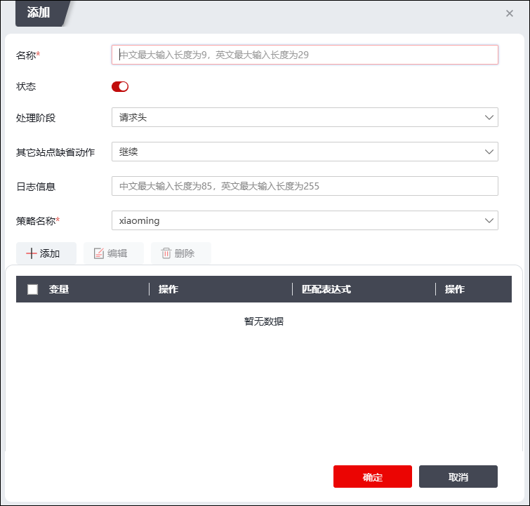

WAF功能支持添加自定义规则，自定义规则添加后，在用户添加的规则集中“custom-rule”类型中引用，具体配置操作如下：
| 步骤1 | 选择 ，激活“自定义规则”页签，点击“添加”，如下图所示，可添加自定义规则。 |

在设置WAF自定义规则时，各项参数的具体说明如下表所示。
参数 |
说明 |
|---|---|
名称 |
设置自定义规则的名称。 |
状态 |
设置是否启用自定义规则。 |
处理阶段 |
可选项：请求头、请求体、答应头、答应体。 |
其他站点缺省动作 |
设置访问其他站点的缺省动作。 Ø继续：继续匹配下一条规则，判断对该访问请求进行的动作，访问请求不记录到攻击日志中。 Ø放行：允许本次访问请求，忽略后续的所有的规则，并将访问请求记录到攻击日志中。 Ø告警：继续匹配下一条规则，判断对该访问请求进行的动作，访问请求记录到攻击日志中。 Ø拒绝：拒绝本次访问请求，将访问记录到攻击日志中。 Ø拒绝不记录日志：拒绝本次访问请求，访问请求不记录到日志中。 Ø临时跳转：由本次请求页面临时跳转到新的页面中，将访问请求记录到攻击日志中，再次接收到访问请求时，继续访问当前请求页面。 Ø永久跳转：由本次请求页面临时跳转到新的页面中，将访问请求记录到攻击日志中，再次接收到访问请求时，将访问新的页面。 Ø错误页面：返回错误页面并记录攻击日志，关于错误页面的配置具体请参见 登录页面。 |
日志信息 |
设置HTTP(S)报文命中规则时系统记录的日志内容。 |
策略名称 |
在下拉框中选择将该自定义规则添加到哪个规则集中。 |
规则 |
点击“+添加”可设置规则的变量、操作、匹配表达式。一个自定义规则中可配置多条规则，多条规则间的关系为逻辑“或”。 规则配置完成后，点击“操作”列的“编辑”可修改规则，点击“删除”可删除规则。勾选规则，点击列表左上方的“编辑”可修改规则，点击“删除”可删除规则。 |
| 步骤2 | 配置完成后，点击【确定】按钮，完成自定义规则的添加。添加完成后，开启“状态”列的开关，即可启用对应自定义规则。 |